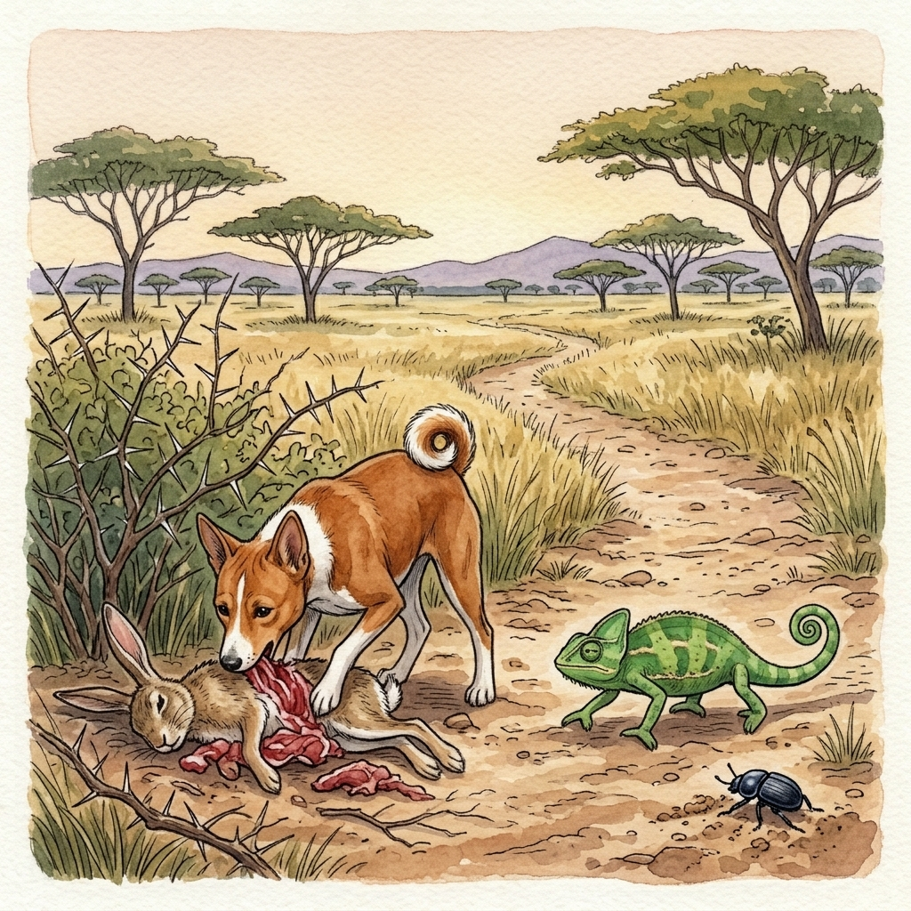

In the beginning, God made the earth, and then He made man to live on it. He gave man everything he needed, and He gave him one more gift: life that would never end. For a long time, people lived together in peace, and nobody grew old, and nobody died.
But peace does not always last. Little by little, people began to do wicked things. They lied and cheated, they stole from one another, and some even killed to get what they wanted. God watched all of this, and He was grieved and angry. At last He decided to punish mankind. From that day on, people would grow old, and in the end they would die.
Soon the earth was filled with weeping. Mothers mourned their children and children mourned their parents, and God’s heart softened when He saw how much grief He had caused. So He called mankind together and offered them a choice. “You may have resurrection after death,” He said, “or you may have death that is everlasting. Decide among yourselves, and choose an animal to carry your answer to me.”
But the people could not agree. They argued for days and split into two camps. On one side stood the good and kind people, who wanted resurrection. On the other side stood the wicked, and they spoke against it with all their strength. They were afraid. Many of them had grown rich from stolen land and stolen goods, and they had killed the rightful owners to keep it. If the dead rose again, those owners would come back to claim what was theirs.
So the wicked met in secret, and they chose the Chameleon to carry their message to God. “Tell Him that death must be final,” they said.
But secrets do not stay secret for long, and soon the news reached the good people. They did not waste a moment. They sent for the Dog, the swiftest runner of all the animals, and told him: “Run to God and tell Him we want resurrection. Be quick, and be sure to get there before the Chameleon.”
The Dog set off like an arrow. The Chameleon, as everyone knows, takes slow, careful steps, and before long the Dog had left him far behind. He was so sure of winning that he hardly bothered to hurry.
The Chameleon was slow, but he was cunning. As the Dog raced past, the Chameleon called out to him. “Friend, look! There is fresh hare meat in the bush over there.”
The Dog was hungry, and there was plenty of time. He thought, “Just a taste, and then I will go on.” But the meat was so delicious that he forgot everything else. He ate and ate, and when he finally looked up, the day was almost gone.
He ran as fast as he could, but it was too late. The Chameleon had already reached the Sky and spoken to God, and God had heard the wicked people’s message and made His decision. When the Dog came panting up with his message of resurrection, he tried to explain, but God would not change His mind.
And so, the story goes, that is why people die and do not rise again.

Adapted from a myth collected by Emmanuel Matateyou and published in An Anthology of Myths, Legends and Folktales from Cameroon.